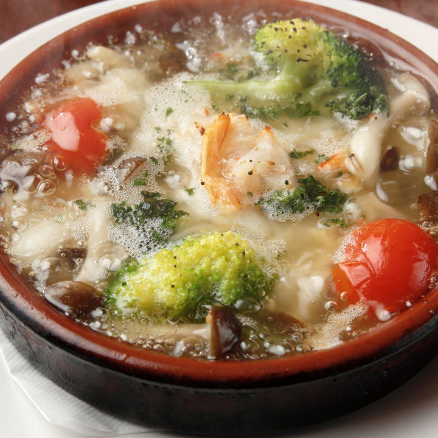
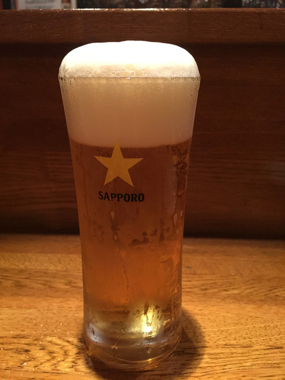

季節の小皿料理
絶品アヒージョや前菜盛り合わせなど、
ワインに合う小皿料理を季節ごとにご用意しております。

イタリアン Wine Bar ChibaTech
Today 17:00 – 23:00 / L.O. 22:30
Tel: 000-1234-5678
イタリアン Wine Bar ChibaTech は、千葉工業大学のそばで
「ひとりでも、仲間とでも、気軽に寄れるワインバー」を目指しています。
料理は、ワインに合わせた小皿料理が中心。
授業や研究のあとに、ちょっと一杯だけでも立ち寄れる、
そんな距離感のバーです。


絶品アヒージョや前菜盛り合わせなど、
ワインに合う小皿料理を季節ごとにご用意しております。

その日のソースに合わせてパスタをセレクト。軽めの一皿から〆の一皿まで。

赤・白・スパークリングを中心に、常時
数種類をグラスで提供しています。

週末限定で、スパークリングワインと
おつまみ盛りのお得なセットをご用意しています。

ビール派の方にも楽しんでいただけるよう、樽生クラフトビールを数種類ご提供中です。
千葉工業大学 正門から徒歩3分。
授業や研究のあと、ふらっと立ち寄りやすい場所にあります。
〒999－999 千葉県奈良氏之市都田沼123
平日 17:00〜23:00 / 土日祝 15:00〜23:00 / 定休日：火曜日